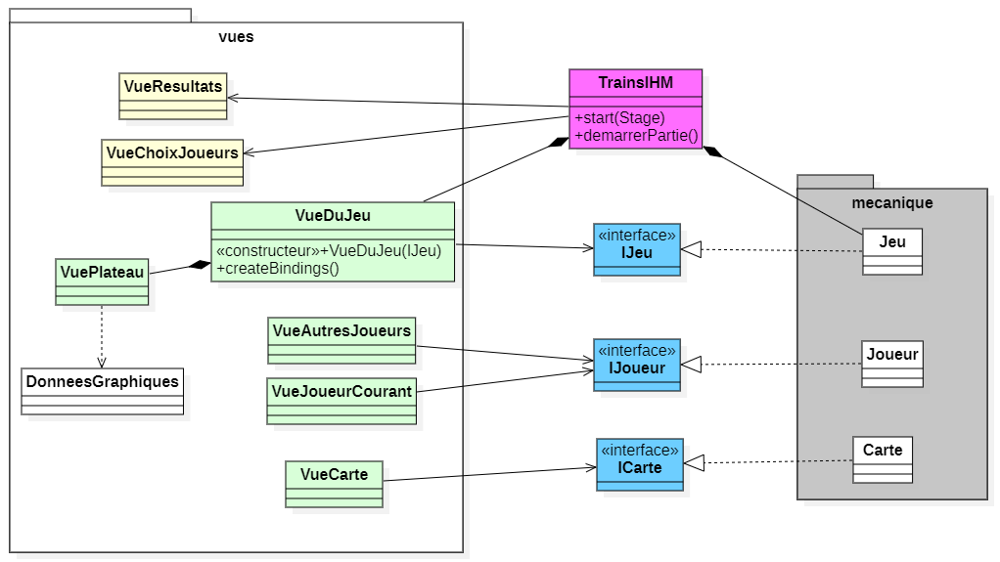

Links
About me
Passionate about software development I design software, mobile applications and websites. I also run a micro-business specializing in the creation and sale of custom customized keyboards, which reflects my entrepreneurial spirit and my passion for technology. I enjoy challenges that allow me to enrich my skills and participate in innovative innovative projects.
Education
BUT Computer Science
IUT Montpellier-Sète
2023-2026
General Baccalaureate
Maths & English Spec
2023
Expertise
I specialize in the design and development of web applications and user interfaces, as well as the design and management of databases. I am experienced in administering complex IT communication systems, ensuring reliable and efficient infrastructure.
I also have expertise in customized keyboard design and assembly, as well as computer building. In addition, I am passionate about video game development and music composition.
Native French speaker, proficient in English at the B2 level. Holder of a full, valid driver’s license.
Languages
C#
Python
Java
C
SQL & PLSQL
JavaScript
PHP
Lua
Experience
PicoKeebs.fr
PicoKeebs is my business focused on creating custom keyboards, including MIDI keyboards for musicians. I developed the online store myself using PHP and design each keyboard from the PCB to the case. My goal is to provide unique, high-quality products that blend aesthetics, performance, and functionality for tech and music enthusiasts.
C4W.com
I completed a 3-month internship at C4W from January 13 to April 5, 2024. C4W is a software development company specializing in CAD (Computer-Aided Design) solutions for the medical field. During my internship, I gained hands-on experience in the development of tailored software solutions for medical applications.
Projects
Voici une liste de projets dans le cadre
2024 2025
SAE Train - Board and Card Game
During my first year at IUT in 2024, the SAE Train project was a major milestone. It involved developing a board and card game in Java, featuring an object-oriented architecture and a graphical user interface built with JavaFX.
Project Context: This project aimed to simulate a board and card game experience, including mechanics for managing a deck of cards, executing card actions, and placing rails on the board to progress in the game.
My Role & Responsibilities: I was responsible for designing the object-oriented architecture, developing the graphical interface, and implementing game mechanics such as deck management, card actions, and board interactions like rail placement.
Technologies Used: Java, JavaFX, and various data structures to handle game logic efficiently. The project was test-driven, ensuring each feature was carefully validated during development.
Key Takeaways: This project significantly strengthened my Java skills, especially in large-scale application development. Working with a test-driven approach and focusing on optimization provided hands-on experience in creating robust, scalable applications.

2024-2025
Personal Project - Terraria-Like in C
For my personal project, I chose to create a game inspired by Terraria in C. This project allowed me to implement a random world generation algorithm based on cellular automata. Developing the game gave me the chance to enhance my C programming skills, particularly in procedural generation and data structure management. The implementation of this algorithm also helped me better understand the challenges related to optimization and memory management in large projects.
2024-2025
SAE3A Web Application for Student Academic Tracking
This project involved the creation of a web application in PHP for tracking the academic progress of students. The application allows administrators to manage student records, monitor grades, and ensure that students meet the necessary requirements to enter specific academic programs. The project includes a MySQL database to store student information and academic results, with functionalities for importing student data from external files for easy management. Additionally, the application features a system for creating aggregates, allowing the determination of whether students have met the necessary requirements for admission to a given program. The architecture follows the Model-View-Controller (MVC) pattern, ensuring clear separation of concerns, maintainability, and scalability of the application. The project also focused on optimizing database queries for fast performance when dealing with large amounts of data.
Hobbies
Programming, Code Game Jam, custom keyboards, hardware, music, badminton, travel.
Contact
You can contact me directly via email at the following address: antonin.chabaud-pech@etu.umontpellier.fr,
or by using the contact form below.